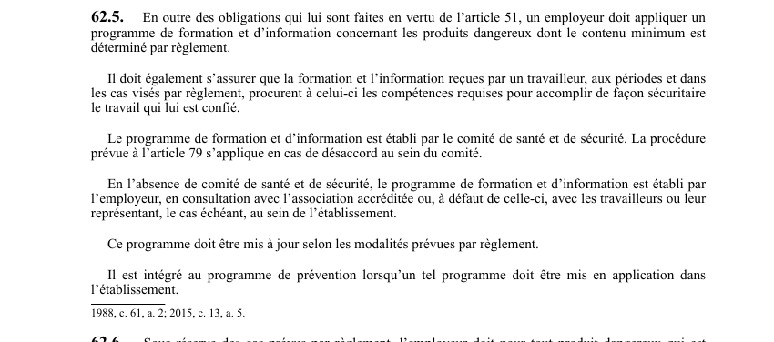

art-62.5-LSST : programme formation produits dangereux
Un article du wiki ⚖️ Recueil législatif
En bref
En outre des obligations de l'article 51, l'employeur doit appliquer un programme de formation. Cette obligation vise l'employeur.
- Et d'information concernant les produits dangereux dont le contenu minimum est déterminé par règlement.
- Contenu minimum déterminé par règlement.
- Programme établi par le comité de santé.
- Mis à jour selon les modalités réglementaires.
🌐 LegisQuébec · 📄 PDF officiel (page 21)
Texte officiel : capture du PDF
{kind=link}

Toucher l'image pour l'agrandir🔗 Ouvrir a cette page : LSST.pdf : page 21 · texte a jour au 26 mars 2024
Voir aussi
- art. 62.3 : disposition abrogée · disposition-abrogée.
- art. 62.4 : langue française étiquettes fiches · obligation : l'étiquette, l'affiche et la fiche de données de sécurité d'un produit dangereux doivent être en langue française ; le texte français peut être assorti d'une ou plusieurs traductions, mais celles-ci ne doivent pas l'emporter sur le texte en langue française.
- art. 62.6 : accès fiches données sécurité · obligation : sous réserve des cas prévus par règlement, l'employeur doit transmettre copie de la fiche de données de sécurité au comité de santé et de sécurité ou à l'association accréditée, conserver et rendre facilement accessible cette fiche à tout travailleur.
- art. 62.7 : demande d'exemption pour renseignements confidentiels · obligation : l'employeur tenu de divulguer sur une étiquette ou une fiche de données de sécurité des renseignements qu'il estime confidentiels peut demander d'être exempté de cette obligation à l'égard des renseignements prévus par règlement.
- ↑ Loi : LSST
Pages qui pointent ici (3)
- art-62.4-LSST : langue française étiquettes fiches Recueil législatif
- art-62.6-LSST : accès fiches données sécurité Recueil législatif
- art-62.7-LSST : demande d'exemption pour renseignements confidentiels Recueil législatif